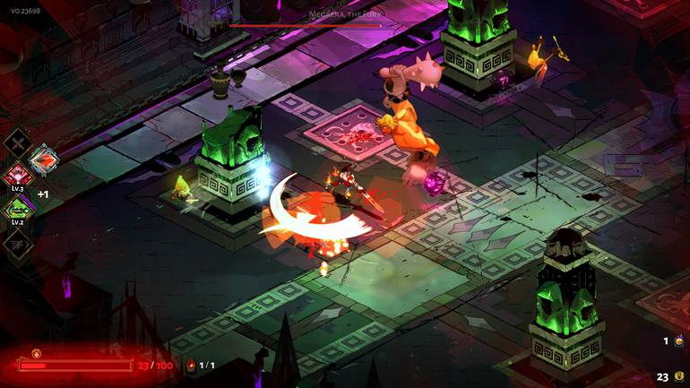

Hades chega ao iOS no dia 19 de março pela Netflix Games
Hades será lançado com suporte a controles por toque, gamepads, conquistas e mais; confira os detalhes
 NOME AUTOR
NOME AUTOR 30 fev 2024GAMES
30 fev 2024GAMES
Depois de fazer sucesso no PC e nos consoles, o roguelike Hades está a caminho dos dispositivos mobile ainda este mês. A princípio, o game será exclusivo do iOS e vai ser distribuído como parte do catálogo da Netflix Games, cujo acesso está associado à assinatura da plataforma de streaming de filmes e séries.
Segundo a empresa, o único requisito necessário para jogar o game será ter um aparelho capaz de rodar o iOS ou iPadOS 16.0 ou mais recente. Para acessar o título, bastará procurar por ele a partir do dia 19 de março no catálogo da App Store ou encontrá-lo dentro da área dedicada a jogos do aplicativo da Netflix.

Desenvolvido pela Supergiant Games, Hades foi lançado em 2020 após passar dois anos em Acesso Antecipado na Epic Games Store. Ele conta a história de Zagreus, filho de Hades, que decide tentar escapar do submundo. No entanto, essa não será uma tarefa fácil, já que ela exigirá derrotar diversos deuses e figuras mitológicas.
Hades vai ganhar sequência em breve
No iOS, Hades vai contar com um sistema de controles de toque totalmente configurável, além de suporte a controles e diferentes acessórios. O título também promete compatibilidade com o sistema de saves por nuvem da Apple, bem como uma série de conquistas desbloqueáveis com diferentes níveis de desafio.
Até o momento, a Supergiant Games não revelou nenhum plano de trazer o game para o Android, o que deve decepcionar quem dá preferência ao sistema operacional. Com o título, a Netflix continua sua campanha de reforçar o catálogo de seu serviço, que recebeu há poucos meses uma trilogia de capítulos de GTA.
Ainda este ano, a Supergiant pretende trazer Hades 2 ao Acesso Antecipado do Steam e da Epic Games Store, sequência bastante aguardada pelos fãs da série. Nela, vamos controlar Melinoë, princesa que tem como objetivo derrotar o Titã, missão que será dificultada pelo poder que comanda o Olimpo.